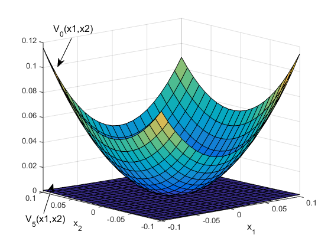
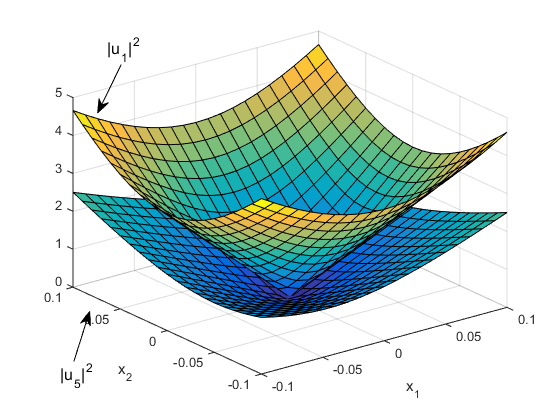
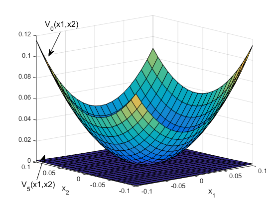
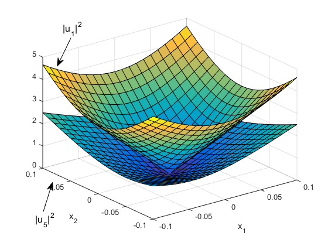

Contents
- --------------------------------------------------------------
- --------------------------------------------------------------
- --------------------------------------------------------------
- --------------------------------------------------------------
- Basic Minomial Functions are defined in separated files
function SimResults = GADP_FT_main() % Demo #2 for Global Adaptive Dynamic Programming for Continuous-time % Nonlinear Systems, by Yu Jiang and Zhong-Ping % Jiang, IEEE Transasctions on Automatic Control, 2015 % % This paper can be found at % 1. http://ieeexplore.ieee.org/xpl/articleDetails.jsp?arnumber=7063901 % 2. http://arxiv.org/pdf/1401.0020.pdf % % System requirements: % - MATLAB (Manually Tested in MATLAB R2014b) % - MATLAB Symbolic Toolbox % - CVX (free to download at http://cvxr.com/cvx/) % % Copyright 2015 Yu Jiang % % Contact: yu.jiang@nyu.edu (Yu Jiang) % Initialize Parameters % x1 x2 x1x1 x1x2 x2x2 x1^3 x1x1x2 x1x2x2 x2^3 Params.F = [0 0 0 1 0 -1 0 -1 0; 1 2 0 0 0 0 0 0 0]; Params.G = [0 0.7; 0.6 0.7]; Params.Q = diag([1,1,0,0,0,0,0,0,0]); Params.R = 0.001; % Inital control gains, thees values are taken from literature Params.K0 = [10.283 -13.769; -10.7 -3.805]; % Extend the gains to match the new basis K = [Params.K0 zeros(2,7)]; K_old = K; Params.Gl = [0 1; 1 1]; % Lower Bound of G Params.Gu = [0 0.5; 0.5 0.5]; % Upper Bound of G % Initialize the value function p = LocalInitialValueControlPair(Params); p_old = ones(size(p))*100; x0 =[1 -2]; % Initial Condition X = x0; % Policy Iteraton Parameters IterMax = 7; %Max iterations T = 0.02; %Length of interval for data collection NumIntervals = 200; %Number of intervals for one interation tol_conv = 0.0001; %Convergence criterion % Compute the objective function for SOSs in Poilcy Iteration x1min = -0.1; x1max = 0.1; x2min = -0.1; x2max = 0.1; c = LocalComputeObjectiveFcn(x1min, x1max, x2min, x2max); % This varibles go to the output psave=[]; ksave= K; Xsave=[]; tsave=[]; for j = 1:IterMax % Online Simulation for Data Collection [Phi, Xi, Theta, Xsave, tsave, t, X] = LocalOnlineDataCollection(T, ... NumIntervals, X, Xsave, tsave, j, Params, K); % Online Policy Iteration if norm(p - p_old)>tol_conv p_old = p; [p, K] = LocalOnlinePolicyIteratoin(Theta, Xi, Phi, p, c); numAIter = j; end psave = [psave;p_old']; %#ok<AGROW> ksave = [ksave;K]; %#ok<AGROW> end % Note: Till this point, all the online simulation is finished. SimResults.psave = psave; SimResults.ksave = ksave; SimResults.xsave = Xsave; SimResults.tsave = tsave; % Generate figures SimResults.hFigs = LocalPostProcess(Params, ... t, Xsave, tsave, p, psave(1,:), K_old,K, numAIter); end
Calling SDPT3 4.0: 105 variables, 50 equality constraints ------------------------------------------------------------ num. of constraints = 50 dim. of sdp var = 23, num. of sdp blk = 3 ******************************************************************* SDPT3: Infeasible path-following algorithms ******************************************************************* version predcorr gam expon scale_data HKM 1 0.000 1 0 it pstep dstep pinfeas dinfeas gap prim-obj dual-obj cputime ------------------------------------------------------------------- 0|0.000|0.000|3.1e+02|2.1e+02|8.3e+03| 0.000000e+00 0.000000e+00| 0:0:00| chol 1 1 1|0.829|0.655|5.4e+01|7.4e+01|2.5e+03| 0.000000e+00 -3.455294e+00| 0:0:00| chol 1 1 2|0.905|0.669|5.1e+00|2.4e+01|1.2e+03| 0.000000e+00 -5.388270e-01| 0:0:00| chol 1 1 3|0.934|0.951|3.4e-01|1.2e+00|6.0e+01| 0.000000e+00 -1.902488e-02| 0:0:00| chol 1 1 4|0.942|0.913|2.0e-02|1.1e-01|5.4e+00| 0.000000e+00 -9.930366e-04| 0:0:00| chol 1 1 5|0.945|0.957|1.1e-03|4.6e-03|2.4e-01| 0.000000e+00 -3.358260e-05| 0:0:00| chol 1 1 6|0.930|0.967|7.6e-05|1.5e-04|9.0e-03| 0.000000e+00 -1.099574e-06| 0:0:00| chol 1 1 7|0.924|0.963|5.8e-06|5.8e-06|4.1e-04| 0.000000e+00 -5.514719e-08| 0:0:00| chol 1 1 8|0.921|0.960|4.6e-07|2.5e-07|2.2e-05| 0.000000e+00 -3.837740e-09| 0:0:00| chol 1 1 9|0.959|0.931|1.9e-08|1.8e-08|1.8e-06| 0.000000e+00 -3.911536e-10| 0:0:00| chol 1 1 10|0.923|0.948|1.4e-09|9.5e-10|1.1e-07| 0.000000e+00 -2.823905e-11| 0:0:00|# chol 1 1 11|0.955|0.944|6.6e-11|5.6e-11|7.6e-09| 0.000000e+00 -2.139878e-12| 0:0:00|# chol 1 1 12|0.954|0.946|8.7e-09|3.2e-12|5.1e-10| 0.000000e+00 -1.473216e-13| 0:0:00|# chol 2 2 13|0.953|0.944|3.7e-10|1.9e-13|3.6e-11| 0.000000e+00 -1.026417e-14| 0:0:00|# chol 2 2 stop: primal infeas has deteriorated too much, 3.2e-08 14|0.954|0.943|3.7e-10|1.9e-13|3.6e-11| 0.000000e+00 -1.026417e-14| 0:0:00| ------------------------------------------------------------------- number of iterations = 14 primal objective value = 0.00000000e+00 dual objective value = -1.02641714e-14 gap := trace(XZ) = 3.56e-11 relative gap = 3.56e-11 actual relative gap = 1.03e-14 rel. primal infeas = 3.69e-10 rel. dual infeas = 1.88e-13 norm(X), norm(y), norm(Z) = 4.0e+02, 5.1e+01, 5.1e+01 norm(A), norm(b), norm(C) = 2.4e+02, 3.4e+00, 1.0e+00 Total CPU time (secs) = 0.31 CPU time per iteration = 0.02 termination code = -7 DIMACS: 5.7e-10 0.0e+00 1.9e-13 0.0e+00 1.0e-14 3.6e-11 ------------------------------------------------------------------- ------------------------------------------------------------ Status: Solved Optimal value (cvx_optval): +0
--------------------------------------------------------------
LocalOnlineDateCollection: Local function for simulation and online data collection ------------------------------------------------------------------------
function [Phi, Xi, Theta, Xsave, tsave, t, X] = LocalOnlineDataCollection(T, NumIntervals, X, Xsave, tsave, j, Params, K) Phi=[]; Xi=[]; Theta=[]; % Matricies to collect online data for i = 0:NumIntervals - 1 [t,X] = ode45(@(t,x) FTSystemWrapper(t,x,Params,K), ... [i,(i+1)]*T+(j-1)*NumIntervals*T,... [X(end,1:2) zeros(1,35+9)]); Phi = [Phi;X(end,2+1:2+34+9)]; Xi = [Xi;X(end,end)]; Theta = [Theta; BasisQuadPhiX(X(end,1),X(end,2))'-BasisQuadPhiX(X(1,1),X(1,2))']; Xsave = [Xsave; X(:,1:2)]; tsave = [tsave; t(:)]; end end
--------------------------------------------------------------
LocalOnlinePolicyIteratoin: Local function for implementing online SOS policy iteration. Note: This does not require the system dynamics ------------------------------------------------------------------------
function [p,K] = LocalOnlinePolicyIteratoin(Theta, Xi, Phi, p0, c) cvx_begin sdp % cvx_precision best variable p(12,1) variable P(5,5) symmetric variable L(9,9) symmetric % Obj: min integral{V(x)} on the set Omega % The objective is equivalently converted to % min c'*[x]_{1,5} minimize(c'*p) % 1) Equality constraint: % Given p (V(x)), L and K can be uniquelly determined LandK = (Phi'*Phi)\(Phi'*(-Xi-Theta*p)); l = LandK(1:25); K = [LandK(26:34)'; LandK(35:43)']; % 2) SOS contraint: % l'*[x] = -dV/dx (f+gu) - r(x,u) is SOS l == [L(1,1); L(1,2)+L(2,1); L(2,2); L(1,3)+L(3,1); L(1,4)+L(4,1)+L(2,3)+L(3,2); L(1,5)+L(5,1)+L(2,4)+L(4,2); L(2,5)+L(5,2); L(1,6)+L(6,1)+L(3,3); L(1,7)+L(7,1)+L(2,6)+L(6,2)+L(3,4)+L(4,3); L(1,8)+L(8,1)+L(2,7)+L(7,2)+L(3,5)+L(5,3)+L(4,4); L(1,9)+L(9,1)+L(2,8)+L(8,2)+L(5,4)+L(4,5); L(2,9)+L(9,2)+L(5,5); L(3,6)+L(6,3); L(3,7)+L(7,3)+L(4,6)+L(6,4); L(3,8)+L(8,3)+L(4,7)+L(7,4)+L(5,6)+L(6,5); L(3,9)+L(9,3)+L(4,8)+L(8,4)+L(5,7)+L(7,5); L(4,9)+L(9,4)+L(5,8)+L(8,5); L(5,9)+L(9,5); L(6,6); L(6,7)+L(7,6); L(6,8)+L(8,6)+L(7,7); L(6,9)+L(9,6)+L(7,8)+L(8,7); L(7,9)+L(9,7)+L(8,8); L(9,8)+L(8,9); L(9,9)]; L>=0; % 3) SOS constraint: % V(x) <= V_old(x) (p - p0) == [P(1,1) P(2,1) + P(1,2) P(2,2) P(1,3) + P(3,1) P(1,4) + P(4,1) + P(2,3) + P(3,2) P(1,5) + P(5,1) + P(2,4) + P(4,2) P(2,5) + P(5,2) P(3,3) P(3,4) + P(4,3) P(3,5) + P(5,3)+P(4,4) P(4,5) + P(5,4) P(5,5)]; P <= 0; cvx_end end function p = LocalInitialValueControlPair(Params) K = [Params.K0 zeros(2,7)]; cvx_begin sdp cvx_precision best variable P(5,5) symmetric variable L(9,9) symmetric variable L1(9,9) symmetric variable L2(9,9) symmetric p = [P(1,1) P(2,1)+P(1,2) P(2,2) P(1,3)+P(3,1) P(1,4)+P(4,1)+P(2,3)+P(3,2) P(1,5)+P(5,1)+P(2,4)+P(4,2) P(2,5)+P(5,2) P(3,3) P(3,4)+P(4,3) P(3,5)+P(5,3)+P(4,4) P(4,5)+P(5,4) P(5,5)]'; W = [2*p(1) p(2) 3*p(4) 2*p(5) p(6) 4*p(8) 3*p(9) 2*p(10) p(11); p(2) 2*p(3) p(5) 2*p(6) 3*p(7) p(9) 2*p(10) 3*p(11) 4*p(12)]; P >= 0; % Gl H1 = (1/2*W'*(Params.F+Params.Gl*K)+1/2*(Params.F+Params.Gl*K)'*W)+Params.Q+K'*Params.R*K; L1(1,1)==H1(1,1); L1(1,2)+L1(2,1)==H1(1,2)+H1(2,1); L1(2,2)==H1(2,2); L1(1,3)+L1(3,1)==H1(1,3)+H1(3,1); L1(1,4)+L1(4,1)+L1(2,3)+L1(3,2)==H1(1,4)+H1(4,1)+H1(2,3)+H1(3,2); L1(1,5)+L1(5,1)+L1(2,4)+L1(4,2)==H1(1,5)+H1(5,1)+H1(2,4)+H1(4,2); L1(2,5)+L1(5,2)==H1(2,5)+H1(5,2); L1(1,6)+L1(6,1)+L1(3,3)== H1(1,6)+H1(6,1)+H1(3,3); L1(1,7)+L1(7,1)+L1(2,6)+L1(6,2)+L1(3,4)+L1(4,3)==H1(1,7)+H1(7,1)+H1(2,6)+H1(6,2)+H1(3,4)+H1(4,3); L1(1,8)+L1(8,1)+L1(2,7)+L1(7,2)+L1(3,5)+L1(5,3)+L1(4,4)==H1(1,8)+H1(8,1)+H1(2,7)+H1(7,2)+H1(3,5)+H1(5,3)+H1(4,4); L1(1,9)+L1(9,1)+L1(2,8)+L1(8,2)+L1(5,4)+L1(4,5)==H1(1,9)+H1(9,1)+H1(2,8)+H1(8,2)+H1(5,4)+H1(4,5); L1(2,9)+L1(9,2)+L1(5,5)==H1(2,9)+H1(9,2)+H1(5,5); L1(3,6)+L1(6,3)==H1(3,6)+H1(6,3); L1(3,7)+L1(7,3)+L1(4,6)+L1(6,4)==H1(3,7)+H1(7,3)+H1(4,6)+H1(6,4); L1(3,8)+L1(8,3)+L1(4,7)+L1(7,4)+L1(5,6)+L1(6,5)==H1(3,8)+H1(8,3)+H1(4,7)+H1(7,4)+H1(5,6)+H1(6,5); L1(3,9)+L1(9,3)+L1(4,8)+L1(8,4)+L1(5,7)+L1(7,5)==H1(3,9)+H1(9,3)+H1(4,8)+H1(8,4)+H1(5,7)+H1(7,5); L1(4,9)+L1(9,4)+L1(5,8)+L1(8,5)==H1(4,9)+H1(9,4)+H1(5,8)+H1(8,5); L1(5,9)+L1(9,5)==H1(5,9)+H1(9,5); L1(6,6)==H1(6,6); L1(6,7)+L1(7,6)==H1(6,7)+H1(7,6); L1(6,8)+L1(8,6)+L1(7,7)==H1(6,8)+H1(8,6)+H1(7,7); L1(6,9)+L1(9,6)+L1(7,8)+L1(8,7)==H1(6,9)+H1(9,6)+H1(7,8)+H1(8,7); L1(7,9)+L1(9,7)+L1(8,8)==H1(7,9)+H1(9,7)+H1(8,8); L1(9,8)+L1(8,9)==H1(9,8)+H1(8,9); L1(9,9)==H1(9,9); L1<=0; % Gu H2 = (1/2*W'*(Params.F+Params.Gu*K)+1/2*(Params.F+Params.Gu*K)'*W)+Params.Q+K'*Params.R*K; L2(1,1)==H2(1,1); L2(1,2)+L2(2,1)==H2(1,2)+H2(2,1); L2(2,2)==H2(2,2); L2(1,3)+L2(3,1)==H2(1,3)+H2(3,1); L2(1,4)+L2(4,1)+L2(2,3)+L2(3,2)==H2(1,4)+H2(4,1)+H2(2,3)+H2(3,2); L2(1,5)+L2(5,1)+L2(2,4)+L2(4,2)==H2(1,5)+H2(5,1)+H2(2,4)+H2(4,2); L2(2,5)+L2(5,2)==H2(2,5)+H2(5,2); L2(1,6)+L2(6,1)+L2(3,3)== H2(1,6)+H2(6,1)+H2(3,3); L2(1,7)+L2(7,1)+L2(2,6)+L2(6,2)+L2(3,4)+L2(4,3)==H2(1,7)+H2(7,1)+H2(2,6)+H2(6,2)+H2(3,4)+H2(4,3); L2(1,8)+L2(8,1)+L2(2,7)+L2(7,2)+L2(3,5)+L2(5,3)+L2(4,4)==H2(1,8)+H2(8,1)+H2(2,7)+H2(7,2)+H2(3,5)+H2(5,3)+H2(4,4); L2(1,9)+L2(9,1)+L2(2,8)+L2(8,2)+L2(5,4)+L2(4,5)==H2(1,9)+H2(9,1)+H2(2,8)+H2(8,2)+H2(5,4)+H2(4,5); L2(2,9)+L2(9,2)+L2(5,5)==H2(2,9)+H2(9,2)+H2(5,5); L2(3,6)+L2(6,3)==H2(3,6)+H2(6,3); L2(3,7)+L2(7,3)+L2(4,6)+L2(6,4)==H2(3,7)+H2(7,3)+H2(4,6)+H2(6,4); L2(3,8)+L2(8,3)+L2(4,7)+L2(7,4)+L2(5,6)+L2(6,5)==H2(3,8)+H2(8,3)+H2(4,7)+H2(7,4)+H2(5,6)+H2(6,5); L2(3,9)+L2(9,3)+L2(4,8)+L2(8,4)+L2(5,7)+L2(7,5)==H2(3,9)+H2(9,3)+H2(4,8)+H2(8,4)+H2(5,7)+H2(7,5); L2(4,9)+L2(9,4)+L2(5,8)+L2(8,5)==H2(4,9)+H2(9,4)+H2(5,8)+H2(8,5); L2(5,9)+L2(9,5)==H2(5,9)+H2(9,5); L2(6,6)==H2(6,6); L2(6,7)+L2(7,6)==H2(6,7)+H2(7,6); L2(6,8)+L2(8,6)+L2(7,7)==H2(6,8)+H2(8,6)+H2(7,7); L2(6,9)+L2(9,6)+L2(7,8)+L2(8,7)==H2(6,9)+H2(9,6)+H2(7,8)+H2(8,7); L2(7,9)+L2(9,7)+L2(8,8)==H2(7,9)+H2(9,7)+H2(8,8); L2(9,8)+L2(8,9)==H2(9,8)+H2(8,9); L2(9,9)==H2(9,9); L2<=0; cvx_end end
Calling SDPT3 4.0: 63 variables, 28 equality constraints ------------------------------------------------------------ num. of constraints = 28 dim. of sdp var = 14, num. of sdp blk = 2 dim. of free var = 3 *** convert ublk to lblk ******************************************************************* SDPT3: Infeasible path-following algorithms ******************************************************************* version predcorr gam expon scale_data HKM 1 0.000 1 0 it pstep dstep pinfeas dinfeas gap prim-obj dual-obj cputime ------------------------------------------------------------------- 0|0.000|0.000|1.2e+01|3.1e+02|7.6e+05|-7.234351e-03 0.000000e+00| 0:0:00| chol 1 1 1|0.669|0.952|3.9e+00|1.5e+01|2.4e+04|-2.201961e-03 -2.300122e+03| 0:0:00| chol 1 1 2|0.972|0.985|1.1e-01|3.0e-01|2.0e+03|-5.259534e-04 -1.680494e+03| 0:0:00| chol 1 1 3|0.921|0.969|8.7e-03|1.8e-02|9.9e+01|-4.904445e-04 -9.130074e+01| 0:0:00| chol 1 1 4|0.918|0.541|7.1e-04|1.0e-02|4.6e+01|-5.030434e-04 -4.403381e+01| 0:0:00| chol 1 1 5|0.950|0.400|3.5e-05|6.3e-03|2.8e+01|-5.080127e-04 -2.700750e+01| 0:0:00| chol 1 1 6|0.970|0.884|8.8e-07|7.4e-04|3.3e+00|-5.082018e-04 -3.202794e+00| 0:0:00| chol 1 1 7|0.974|0.977|4.8e-08|1.8e-05|7.5e-02|-5.090485e-04 -7.333159e-02| 0:0:00| chol 1 1 8|1.000|0.913|1.7e-09|1.6e-06|6.6e-03|-5.489794e-04 -6.938556e-03| 0:0:00| chol 1 1 9|1.000|0.018|2.1e-08|1.6e-06|6.1e-03|-1.073919e-03 -6.853046e-03| 0:0:00| chol 1 1 10|1.000|0.681|1.9e-10|5.2e-07|2.0e-03|-1.246250e-03 -3.177643e-03| 0:0:00| chol 1 1 11|1.000|0.922|1.8e-09|3.4e-05|4.5e-04|-1.311509e-03 -1.464965e-03| 0:0:00| chol 1 1 12|1.000|0.944|6.1e-10|2.5e-05|1.4e-04|-1.304199e-03 -1.390120e-03| 0:0:00| chol 1 1 13|0.997|0.874|5.9e-10|7.9e-06|1.7e-05|-1.315306e-03 -1.327414e-03| 0:0:00| chol 1 1 14|0.879|0.895|1.1e-10|1.1e-06|7.0e-06|-1.318382e-03 -1.325495e-03| 0:0:00| chol 1 1 15|1.000|0.775|5.5e-12|4.6e-07|2.2e-06|-1.320794e-03 -1.322870e-03| 0:0:00| chol 1 1 16|1.000|0.941|2.1e-12|1.3e-07|5.6e-07|-1.321113e-03 -1.321645e-03| 0:0:00| chol 1 1 17|1.000|0.881|1.5e-13|3.5e-08|1.1e-07|-1.321327e-03 -1.321432e-03| 0:0:00| chol 1 1 18|1.000|0.932|2.3e-14|6.7e-09|1.7e-08|-1.321365e-03 -1.321382e-03| 0:0:00| chol 1 1 19|1.000|0.952|2.0e-11|1.1e-09|2.4e-09|-1.321371e-03 -1.321373e-03| 0:0:00| stop: max(relative gap, infeasibilities) < 1.49e-08 ------------------------------------------------------------------- number of iterations = 19 primal objective value = -1.32137058e-03 dual objective value = -1.32137295e-03 gap := trace(XZ) = 2.40e-09 relative gap = 2.39e-09 actual relative gap = 2.37e-09 rel. primal infeas = 1.96e-11 rel. dual infeas = 1.07e-09 norm(X), norm(y), norm(Z) = 1.3e+01, 1.2e+00, 1.2e+00 norm(A), norm(b), norm(C) = 1.1e+02, 2.3e+02, 1.0e+00 Total CPU time (secs) = 0.29 CPU time per iteration = 0.02 termination code = 0 DIMACS: 2.6e-11 0.0e+00 1.1e-09 0.0e+00 2.4e-09 2.4e-09 ------------------------------------------------------------------- ------------------------------------------------------------ Status: Solved Optimal value (cvx_optval): +2.08088e-05 Calling SDPT3 4.0: 63 variables, 28 equality constraints ------------------------------------------------------------ num. of constraints = 28 dim. of sdp var = 14, num. of sdp blk = 2 dim. of free var = 3 *** convert ublk to lblk ******************************************************************* SDPT3: Infeasible path-following algorithms ******************************************************************* version predcorr gam expon scale_data HKM 1 0.000 1 0 it pstep dstep pinfeas dinfeas gap prim-obj dual-obj cputime ------------------------------------------------------------------- 0|0.000|0.000|7.8e+02|1.5e+03|7.6e+04|-2.682667e-03 0.000000e+00| 0:0:00| chol 1 1 1|0.830|0.963|1.3e+02|5.5e+01|2.9e+03|-4.292587e-04 -1.010000e+01| 0:0:00| chol 1 1 2|0.977|0.981|3.0e+00|1.1e+00|6.7e+01|-1.338567e-05 -1.036154e+01| 0:0:00| chol 1 1 3|0.893|0.971|3.2e-01|3.2e-02|1.0e+01|-4.965404e-06 -5.547511e+00| 0:0:00| chol 1 1 4|0.699|0.064|9.7e-02|4.1e-02|6.9e+00|-4.161335e-06 -5.237014e+00| 0:0:00| chol 2 2 5|0.828|0.782|1.7e-02|2.6e-02|1.6e+00|-3.846595e-06 -1.388816e+00| 0:0:00| chol 2 2 6|1.000|0.640|3.3e-05|1.3e-02|5.8e-01|-3.753230e-06 -5.742303e-01| 0:0:00| chol 2 1 7|1.000|0.985|4.5e-05|2.0e-04|9.0e-03|-3.753131e-06 -8.917189e-03| 0:0:00| chol 2 2 8|1.000|0.982|5.0e-07|1.3e-05|1.6e-04|-3.754472e-06 -1.628470e-04| 0:0:00| chol 1 1 9|1.000|0.981|6.8e-08|1.0e-05|3.2e-06|-3.809069e-06 -6.857229e-06| 0:0:00| chol 1 1 10|0.963|0.950|2.5e-09|2.4e-07|5.6e-07|-4.535790e-06 -5.094552e-06| 0:0:00| chol 1 1 11|1.000|0.959|5.4e-10|3.5e-08|6.5e-08|-4.617499e-06 -4.681214e-06| 0:0:00| chol 1 1 12|1.000|0.981|2.4e-10|4.0e-09|2.9e-09|-4.623550e-06 -4.626396e-06| 0:0:00| stop: max(relative gap, infeasibilities) < 1.49e-08 ------------------------------------------------------------------- number of iterations = 12 primal objective value = -4.62355039e-06 dual objective value = -4.62639636e-06 gap := trace(XZ) = 2.90e-09 relative gap = 2.90e-09 actual relative gap = 2.85e-09 rel. primal infeas = 2.38e-10 rel. dual infeas = 4.02e-09 norm(X), norm(y), norm(Z) = 2.5e-01, 5.5e-06, 8.0e-06 norm(A), norm(b), norm(C) = 6.7e+02, 4.0e+00, 1.0e+00 Total CPU time (secs) = 0.19 CPU time per iteration = 0.02 termination code = 0 DIMACS: 3.2e-10 0.0e+00 4.0e-09 0.0e+00 2.8e-09 2.9e-09 ------------------------------------------------------------------- ------------------------------------------------------------ Status: Solved Optimal value (cvx_optval): +1.6185e-05 Calling SDPT3 4.0: 63 variables, 28 equality constraints ------------------------------------------------------------ num. of constraints = 28 dim. of sdp var = 14, num. of sdp blk = 2 dim. of free var = 3 *** convert ublk to lblk ******************************************************************* SDPT3: Infeasible path-following algorithms ******************************************************************* version predcorr gam expon scale_data HKM 1 0.000 1 0 it pstep dstep pinfeas dinfeas gap prim-obj dual-obj cputime ------------------------------------------------------------------- 0|0.000|0.000|1.3e+03|1.0e+03|2.9e+04|-2.682667e-03 0.000000e+00| 0:0:00| chol 1 1 1|0.832|0.965|2.1e+02|3.6e+01|1.7e+03|-4.233864e-04 -1.744210e+00| 0:0:00| chol 1 1 2|0.977|0.979|4.8e+00|7.4e-01|3.8e+01|-1.001989e-05 -1.823504e+00| 0:0:00| chol 1 1 3|0.876|0.951|6.0e-01|3.7e-02|5.6e+00|-1.931918e-06 -1.482759e+00| 0:0:00| chol 1 1 4|0.650|0.025|2.1e-01|4.8e-02|3.1e+00|-1.075117e-06 -1.458420e+00| 0:0:00| chol 1 2 5|0.859|0.816|3.0e-02|8.9e-03|6.5e-01|-7.613742e-07 -4.990274e-01| 0:0:00| chol 2 2 6|1.000|0.355|7.0e-05|1.1e-02|3.6e-01|-7.024107e-07 -3.465648e-01| 0:0:00| chol 2 2 7|1.000|0.979|8.5e-05|2.3e-04|7.5e-03|-7.022980e-07 -7.435215e-03| 0:0:00| chol 2 2 8|1.000|0.983|1.7e-06|2.1e-05|1.3e-04|-7.024456e-07 -1.256069e-04| 0:0:00| chol 1 1 9|1.000|0.985|9.1e-08|8.0e-06|2.0e-06|-7.071716e-07 -2.577556e-06| 0:0:00| chol 1 1 10|1.000|0.961|1.1e-10|1.4e-07|2.6e-07|-8.598471e-07 -1.117655e-06| 0:0:00| chol 1 1 11|1.000|0.961|5.1e-10|1.6e-08|3.8e-08|-9.277207e-07 -9.656320e-07| 0:0:00| chol 1 1 12|1.000|0.980|2.6e-10|2.4e-09|3.3e-09|-9.307295e-07 -9.339412e-07| 0:0:00| stop: max(relative gap, infeasibilities) < 1.49e-08 ------------------------------------------------------------------- number of iterations = 12 primal objective value = -9.30729543e-07 dual objective value = -9.33941216e-07 gap := trace(XZ) = 3.26e-09 relative gap = 3.26e-09 actual relative gap = 3.21e-09 rel. primal infeas = 2.64e-10 rel. dual infeas = 2.37e-09 norm(X), norm(y), norm(Z) = 2.3e-01, 8.0e-06, 1.1e-05 norm(A), norm(b), norm(C) = 4.4e+02, 1.6e+00, 1.0e+00 Total CPU time (secs) = 0.19 CPU time per iteration = 0.02 termination code = 0 DIMACS: 3.0e-10 0.0e+00 2.4e-09 0.0e+00 3.2e-09 3.3e-09 ------------------------------------------------------------------- ------------------------------------------------------------ Status: Solved Optimal value (cvx_optval): +1.52541e-05 Calling SDPT3 4.0: 63 variables, 28 equality constraints ------------------------------------------------------------ num. of constraints = 28 dim. of sdp var = 14, num. of sdp blk = 2 dim. of free var = 3 *** convert ublk to lblk ******************************************************************* SDPT3: Infeasible path-following algorithms ******************************************************************* version predcorr gam expon scale_data HKM 1 0.000 1 0 it pstep dstep pinfeas dinfeas gap prim-obj dual-obj cputime ------------------------------------------------------------------- 0|0.000|0.000|1.4e+03|8.8e+02|2.1e+04|-2.682667e-03 0.000000e+00| 0:0:00| chol 1 1 1|0.831|0.964|2.3e+02|3.1e+01|1.5e+03|-4.219130e-04 -4.958502e-01| 0:0:00| chol 1 1 2|0.977|0.978|5.4e+00|7.1e-01|3.3e+01|-9.399934e-06 -5.284440e-01| 0:0:00| chol 1 1 3|0.878|0.944|6.6e-01|4.1e-02|4.3e+00|-1.196210e-06 -4.477537e-01| 0:0:00| chol 1 1 4|0.663|0.021|2.2e-01|5.3e-02|1.9e+00|-3.440702e-07 -4.397584e-01| 0:0:00| chol 1 1 5|0.851|0.846|3.3e-02|8.2e-03|3.6e-01|-9.098177e-08 -1.919897e-01| 0:0:00| chol 2 2 6|0.910|0.306|2.9e-03|1.1e-02|1.7e-01|-5.056274e-08 -1.481708e-01| 0:0:00| chol 2 2 7|1.000|0.974|7.2e-05|8.7e-04|6.8e-03|-4.756291e-08 -6.646211e-03| 0:0:00| chol 2 2 8|1.000|0.986|5.7e-06|2.7e-05|1.0e-04|-4.756628e-08 -9.762770e-05| 0:0:00| chol 1 1 9|1.000|0.987|2.0e-07|6.9e-06|1.5e-06|-4.766322e-08 -1.344902e-06| 0:0:00| chol 1 1 10|1.000|0.966|4.3e-10|1.4e-07|1.5e-07|-5.510304e-08 -1.929521e-07| 0:0:00| chol 1 1 11|0.997|0.961|4.3e-10|9.4e-09|2.9e-08|-7.332074e-08 -1.018760e-07| 0:0:00| chol 1 1 12|1.000|0.972|2.9e-10|1.8e-09|4.6e-09|-7.419388e-08 -7.869062e-08| 0:0:00| stop: max(relative gap, infeasibilities) < 1.49e-08 ------------------------------------------------------------------- number of iterations = 12 primal objective value = -7.41938781e-08 dual objective value = -7.86906239e-08 gap := trace(XZ) = 4.59e-09 relative gap = 4.59e-09 actual relative gap = 4.50e-09 rel. primal infeas = 2.86e-10 rel. dual infeas = 1.83e-09 norm(X), norm(y), norm(Z) = 2.2e-01, 1.3e-05, 2.1e-05 norm(A), norm(b), norm(C) = 3.8e+02, 1.3e+00, 1.0e+00 Total CPU time (secs) = 0.21 CPU time per iteration = 0.02 termination code = 0 DIMACS: 3.1e-10 0.0e+00 1.8e-09 0.0e+00 4.5e-09 4.6e-09 ------------------------------------------------------------------- ------------------------------------------------------------ Status: Solved Optimal value (cvx_optval): +1.51798e-05 Calling SDPT3 4.0: 63 variables, 28 equality constraints ------------------------------------------------------------ num. of constraints = 28 dim. of sdp var = 14, num. of sdp blk = 2 dim. of free var = 3 *** convert ublk to lblk ******************************************************************* SDPT3: Infeasible path-following algorithms ******************************************************************* version predcorr gam expon scale_data HKM 1 0.000 1 0 it pstep dstep pinfeas dinfeas gap prim-obj dual-obj cputime ------------------------------------------------------------------- 0|0.000|0.000|1.4e+03|8.7e+02|2.0e+04|-2.682667e-03 0.000000e+00| 0:0:00| chol 1 1 1|0.831|0.964|2.3e+02|3.1e+01|1.4e+03|-4.216062e-04 -3.929527e-01| 0:0:00| chol 1 1 2|0.977|0.977|5.4e+00|7.2e-01|3.3e+01|-9.373559e-06 -4.201747e-01| 0:0:00| chol 1 1 3|0.880|0.947|6.5e-01|3.9e-02|4.1e+00|-1.125677e-06 -3.444332e-01| 0:0:00| chol 1 1 4|0.660|0.020|2.2e-01|5.1e-02|1.8e+00|-2.854418e-07 -3.365296e-01| 0:0:00| chol 1 1 5|0.846|0.859|3.4e-02|7.2e-03|3.1e-01|-4.212515e-08 -1.164025e-01| 0:0:00| chol 1 2 6|0.910|0.312|3.1e-03|1.1e-02|1.1e-01|-3.221961e-09 -8.873660e-02| 0:0:00| chol 2 2 7|1.000|0.975|7.2e-05|8.7e-04|5.4e-03|-5.977921e-10 -5.348984e-03| 0:0:00| chol 2 2 8|1.000|0.985|1.6e-05|2.8e-05|8.7e-05|-5.832888e-10 -8.612511e-05| 0:0:00| chol 1 1 9|1.000|0.983|5.9e-07|7.0e-06|1.8e-06|-6.104457e-10 -1.571626e-06| 0:0:00| chol 1 1 10|1.000|0.988|2.2e-09|1.6e-07|4.4e-08|-6.156832e-10 -3.832808e-08| 0:0:00| chol 1 1 11|1.000|0.978|2.8e-10|3.6e-09|4.1e-09|-7.375031e-10 -4.624561e-09| 0:0:00| stop: max(relative gap, infeasibilities) < 1.49e-08 ------------------------------------------------------------------- number of iterations = 11 primal objective value = -7.37503070e-10 dual objective value = -4.62456121e-09 gap := trace(XZ) = 4.06e-09 relative gap = 4.06e-09 actual relative gap = 3.89e-09 rel. primal infeas = 2.76e-10 rel. dual infeas = 3.58e-09 norm(X), norm(y), norm(Z) = 2.1e-01, 1.6e-05, 7.2e-05 norm(A), norm(b), norm(C) = 3.7e+02, 1.2e+00, 1.0e+00 Total CPU time (secs) = 0.19 CPU time per iteration = 0.02 termination code = 0 DIMACS: 3.0e-10 0.0e+00 3.6e-09 0.0e+00 3.9e-09 4.1e-09 ------------------------------------------------------------------- ------------------------------------------------------------ Status: Solved Optimal value (cvx_optval): +1.5179e-05
--------------------------------------------------------------
LocalComputeObjectiveFcn: - Compute Coefficients for the objective functioin in SOSp PI ------------------------------------------------------------------------
function c = LocalComputeObjectiveFcn(x1min, x1max, x2min, x2max) % In the SOS-base Policy Iteration, we need to solve an SOSp in each % iteraton. The objective of the SOSp is % % min integration{V(x)}_Omega % % where Omega is a compact set, an area of interested of the system % performance. syms x1 x2 v_basis_fcn = BasisQuadPhiX(x1,x2); c = double(int(int(v_basis_fcn,x1min,x1max),x2min,x2max)); end
--------------------------------------------------------------
LocalPostProcess - Post process data and plot the resuts ------------------------------------------------------------------------
function hFigs = LocalPostProcess(Params, t, Xsave, tsave, p, p1, K_old,Knew, numAIter) close all [t,x] = ode45(@(t,x)FTSys(x, Params, Knew),[t(end) 30], Xsave(end,:)); tsave = [tsave;t(:)]; Xsave = [Xsave; x]; x00 = Xsave(end,:) + [5,10]; % coordinate transform [t,x] = ode45(@(t,x)FTSys(x, Params, Knew),[30 35], x00); tsave = [tsave;t(:)]; Xsave = [Xsave; x]; [t,x] = ode45(@(t,x)FTSys(x, Params, K_old),[30 35], x00); % Figure 1. Plot state trajectories h1 = figure(1); subplot(2,2,1) plot(tsave,Xsave(:,1), 'b-','Linewidth', 2) axis([0 35 -3 7]) legend('With GADP-based controller') xlabel('time (sec)') ylabel('x_1') subplot(2,2,2) plot(tsave,Xsave(:,1),'b-',t,x(:,1),'r-.', 'Linewidth', 2) legend('With GADP-based controller', 'With initial controller') xlabel('time (sec)') axis([29.8 30.5 -3 7]) subplot(2,2,3) plot(tsave,Xsave(:,2),'b-','Linewidth', 2) axis([0 35 -4 15]) legend('With GADP-based controller') xlabel('time (sec)') ylabel('x_2') subplot(2,2,4) plot(tsave,Xsave(:,2),'b-',t,x(:,2),'r-.', 'Linewidth', 2) axis([29.8 30.5 -4 15]) legend('With GADP-based controller', 'With initial controller') xlabel('time (sec)') % Figure 2. Plot and compare the value functions h2 = figure(2); x1 = (-10:1:10)/100; x2 = (-10:1:10)/100; vn = zeros(length(x1),length(x2)); v1 = zeros(length(x1),length(x2)); vs = []; us = []; un = []; kn = vn; k1 = v1; for i=1:length(x1) for j=1:length(x2) vn(i,j) = p(:)'*BasisQuadPhiX(x1(i),x2(j)); v1(i,j) = p1(:)'*BasisQuadPhiX(x1(i),x2(j)); k1(i,j) = norm([K_old(1,:)*BasisPlanMono(x1(i),x2(j)), ... K_old(2,:)*BasisPlanMono(x1(i),x2(j))]); kn(i,j) = norm([Knew(1,:)*BasisPlanMono(x1(i),x2(j)), ... Knew(2,:)*BasisPlanMono(x1(i),x2(j))]); end end surf(x1,x2,vn') hold on surf(x1,x2,v1') hold off xlabel('x_1', 'FontSize', 12) ylabel('x_2', 'FontSize', 12) % Create axes view(gca,[-40.5 14]); annotation(gcf,'textarrow',[0.216071428571429 0.174535137214669],... [0.845238095238095 0.731440045897881], ... 'TextEdgeColor','none','FontSize',12,... 'String',{'V_0(x1,x2)'}); annotation(gcf,'textarrow',[0.132142857142857 0.159949345986154],... [0.140476190476191 0.257882960413087], ... 'TextEdgeColor','none','FontSize',12,... 'String',{sprintf('V_%d(x1,x2)',numAIter)}); % Figure 3. Plot the control curve h3 = figure(3); surf(x1,x2,kn') hold on surf(x1,x2,k1') hold off xlabel('x_1') ylabel('x_2') annotation(gcf,'textarrow',[0.216071428571429 0.174535137214669],... [0.845238095238095 0.731440045897881], ... 'TextEdgeColor','none','FontSize',12,... 'String',{'|u_1|^2'}); annotation(gcf,'textarrow',[0.132142857142857 0.159949345986154],... [0.140476190476191 0.257882960413087], ... 'TextEdgeColor','none','FontSize',12,... 'String',{sprintf('|u_%d|^2',numAIter)}); %export_fig Ex2_control -pdf -transparent hFigs = [h1;h2;h3]; end
ans =
psave: [7x12 double]
ksave: [16x9 double]
xsave: [68412x2 double]
tsave: [68412x1 double]
hFigs: [3x1 Figure]
  
  Basic Minomial Functions are defined in separated files
Basis for system dynamics and controller dx = F*sigma + G*u u = K*sigma; Basis for V(x)